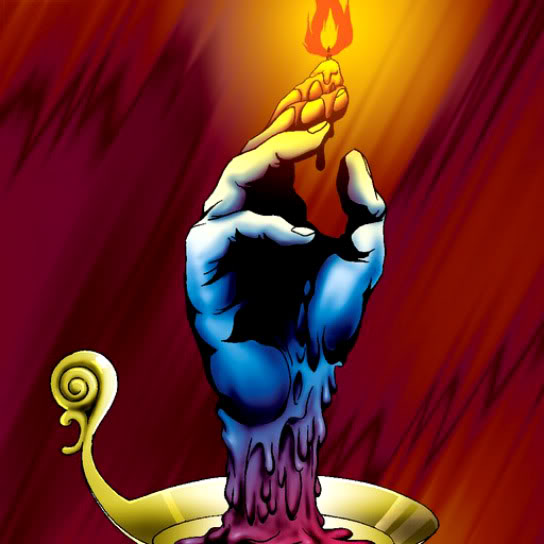

Candle of Fate

Description: "While this card is face-up in the defense position, all opponent monsters are reduced by 100 points each turn."
STATS
ATK: 600
DEF: 600DECK COST
Deck Cost per Card: 17EFFECT NOT IMPLEMENTED
Fusion List (30 Possible Fusions)
- Candle of Fate + Ancient Tree of Enlightenment = Rose Spectre of Dunn
- Candle of Fate + Ansatsu = Flame Swordsman
- Candle of Fate + Arlownay = Rose Spectre of Dunn
- Candle of Fate + Armaill = Charubin the Fire Knight
- Candle of Fate + Armored Rat = Flame Cerebrus
- Candle of Fate + Axe Raider = Flame Swordsman
- Candle of Fate + Bean Soldier = Rose Spectre of Dunn
- Candle of Fate + Blue-Winged Crown = Crimson Sunbird
- Candle of Fate + Celtic Guardian = Flame Swordsman
- Candle of Fate + Dark Plant = Firegrass
- Candle of Fate + Doron = Charubin the Fire Knight
- Candle of Fate + Faith Bird = Crimson Sunbird
- Candle of Fate + Fiend's Hand = Fire Reaper
- Candle of Fate + Fiend Reflection #1 = Crimson Sunbird
- Candle of Fate + Fire Reaper = Flame Ghost
- Candle of Fate + Fungi of the Musk = Darkworld Thorns
- Candle of Fate + Fusionist = Flame Cerebrus
- Candle of Fate + Haniwa = Dissolverock
- Candle of Fate + Job-Change Mirror = Ryu-Kishin Powered
- Candle of Fate + Kagemusha of the Blue Flame = Charubin the Fire Knight
- Candle of Fate + Karbonala Warrior = Flame Swordsman
- Candle of Fate + Milus Radiant = Flame Cerebrus
- Candle of Fate + Mystic Horseman = Flame Cerebrus
- Candle of Fate + Queen's Double = Charubin the Fire Knight
- Candle of Fate + Shadow Specter = Fire Reaper
- Candle of Fate + Silver Fang = Flame Cerebrus
- Candle of Fate + Skull Red Bird = Crimson Sunbird
- Candle of Fate + Swordsman from a Foreign Land = Charubin the Fire Knight
- Candle of Fate + Tentacle Plant = Firegrass
- Candle of Fate + Unknown Warrior of Fiend = Charubin the Fire Knight